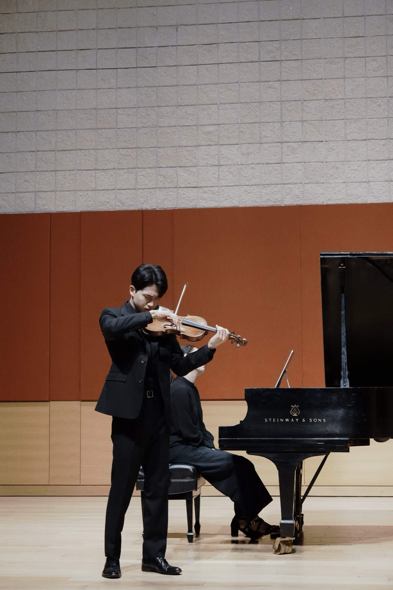

We connect Taiwan's finest classical musicians with the people, stages, and students who need them — bookings, lessons, and brand-building, all under one roof.
Taiwan is full of world-class classical talent — yet the best musicians and the people who want to hire them had no real place to find each other. OPUS.Z began as the answer to that gap.
We opened applications and hand-selected musicians across strings, piano, winds, chamber, and more — building a roster defined by excellence, not volume.
Bookings, lessons, messaging, and musician profiles came together in one place — so clients can post a project, get proposals, and book with confidence, all online.
Today we don't just match musicians to work — we help them build their brand, grow their audience, and stand out in a crowded industry. We're just getting started.
We exist to make sure exceptional musicians are seen, heard, and hired — with focus, intention, and impact.

Founder portrait — drop your photo at assets/images/founder/martin.jpgMartin is a musician himself — which is exactly why OPUS.Z exists. He has lived the gap the platform was built to close: Taiwan is home to extraordinary classical talent, yet the musicians who deserve the spotlight and the people looking to hire them rarely found an easy way to meet. He started OPUS.Z to change that — a place where the country's finest performers are discovered, booked, and championed, and where every musician can build not just a career, but a name.
"OPUS.Z made finding the right musicians effortless — professional, fast, and exactly the calibre we hoped for."